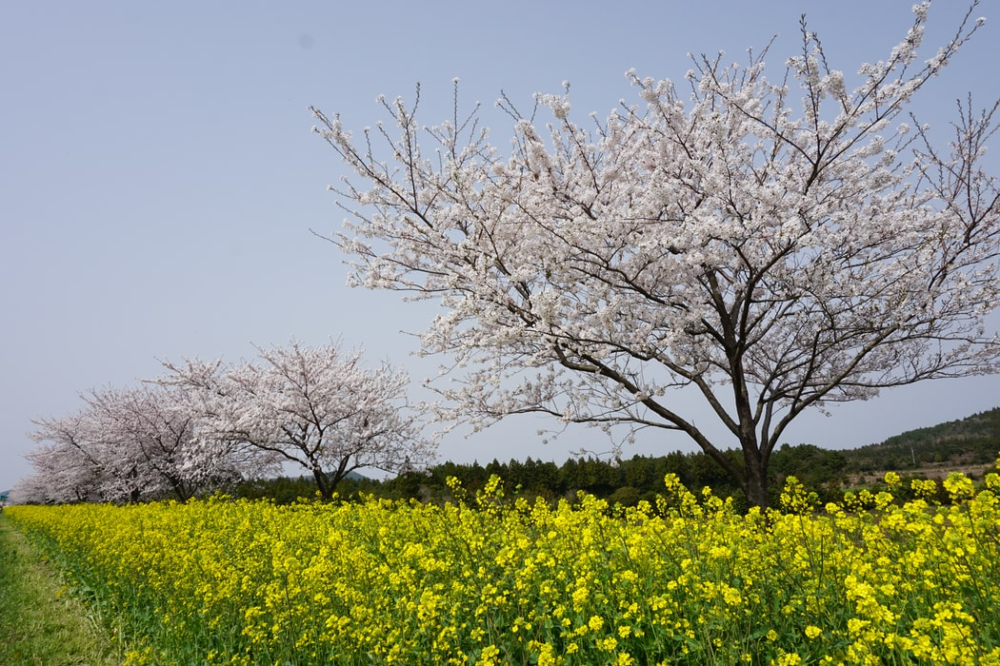
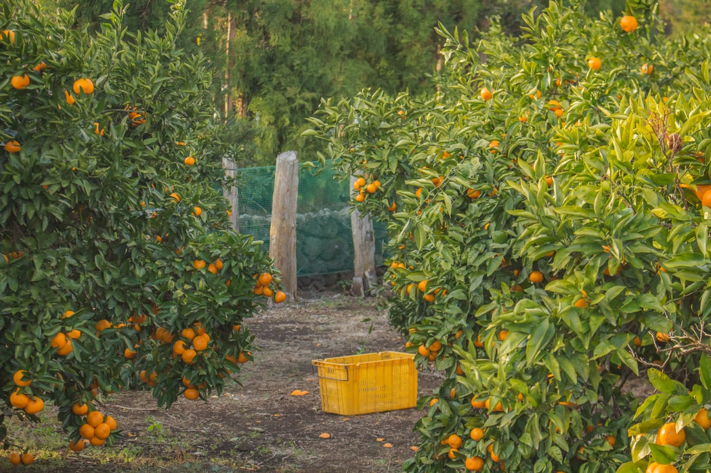
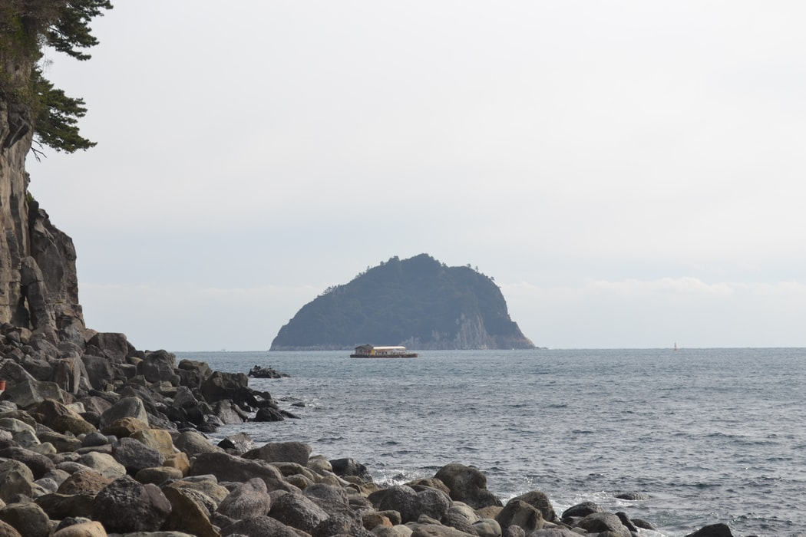
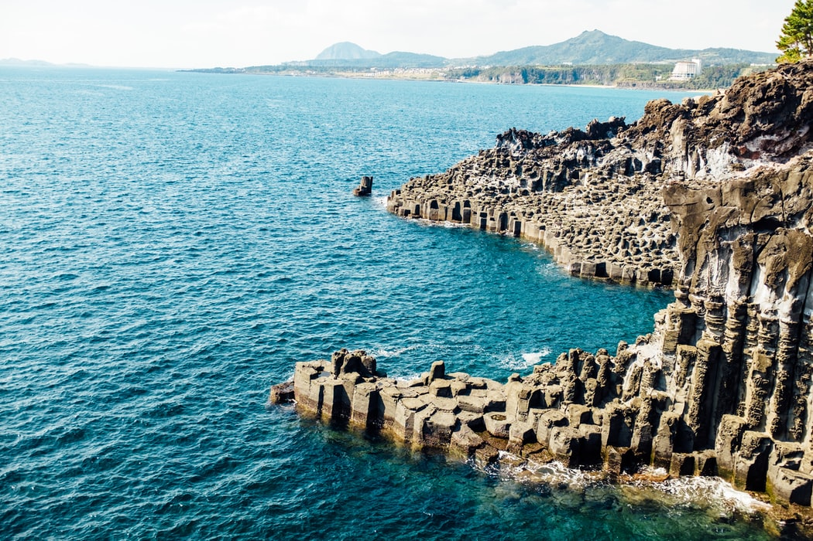
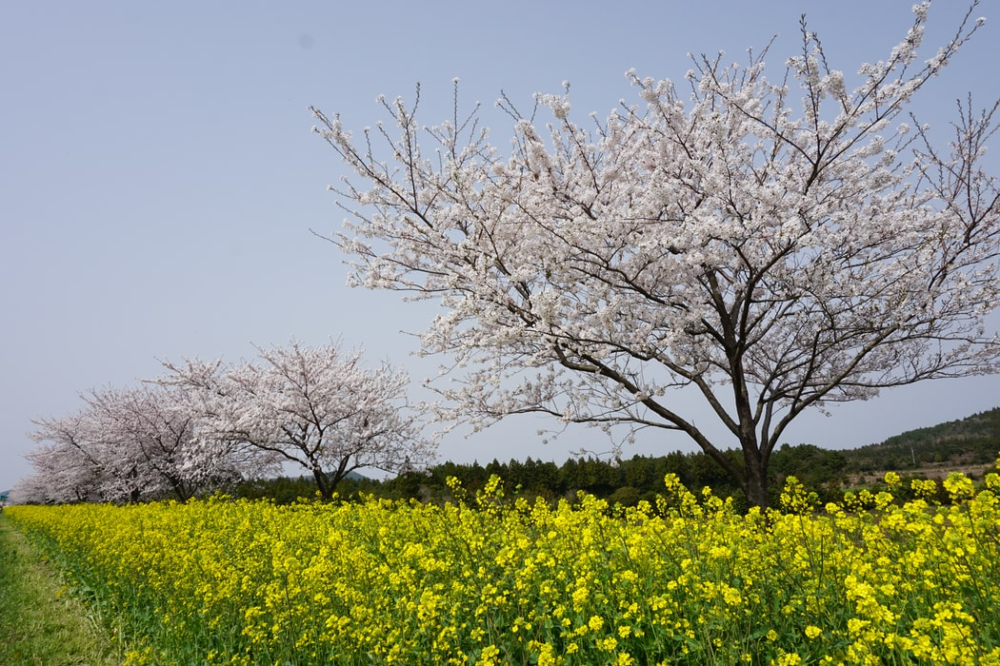
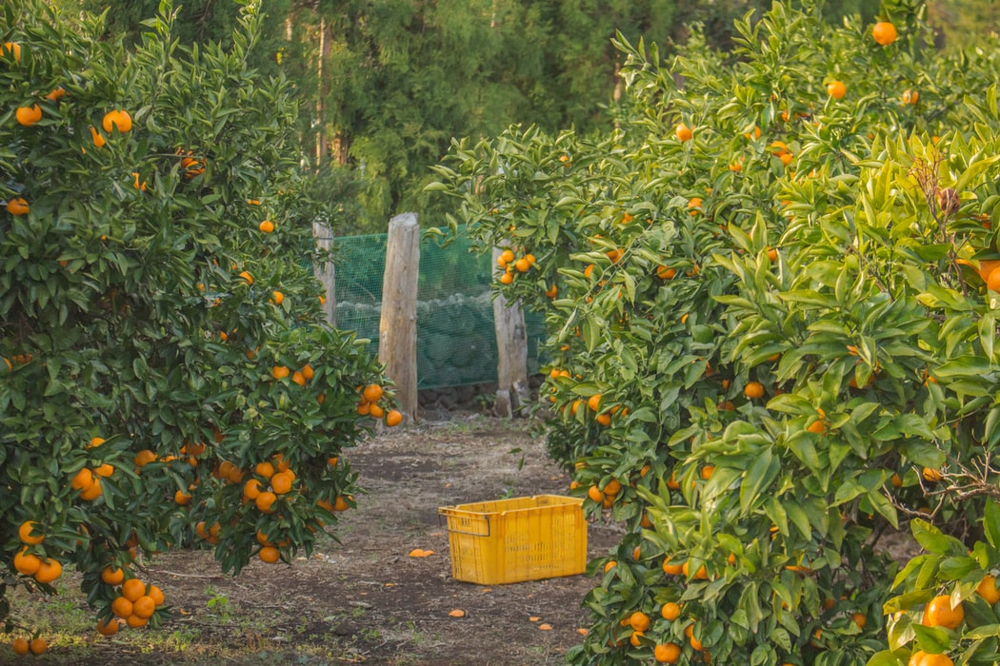
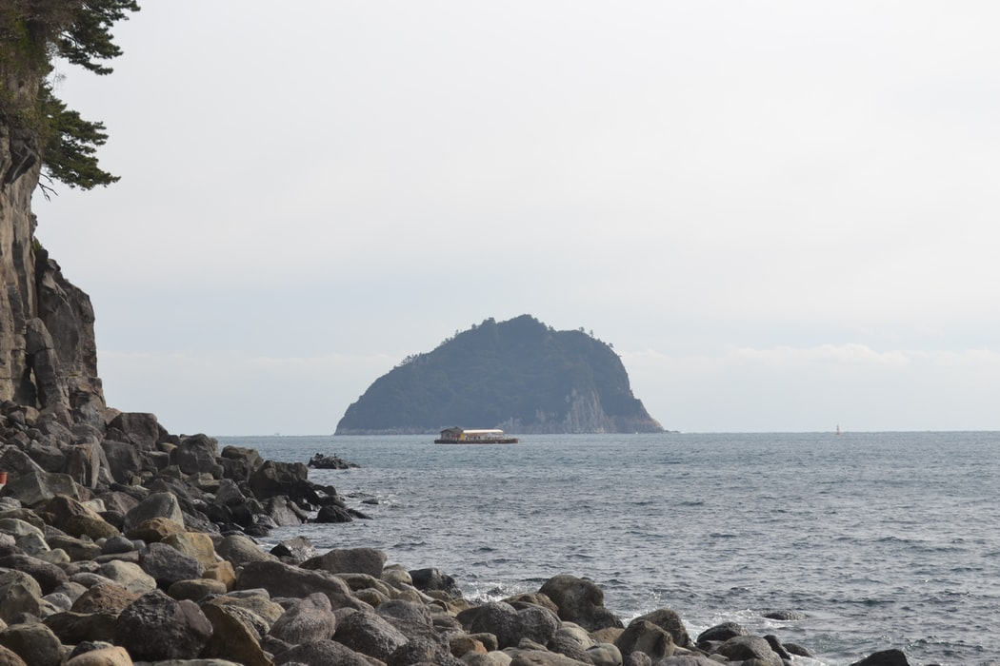
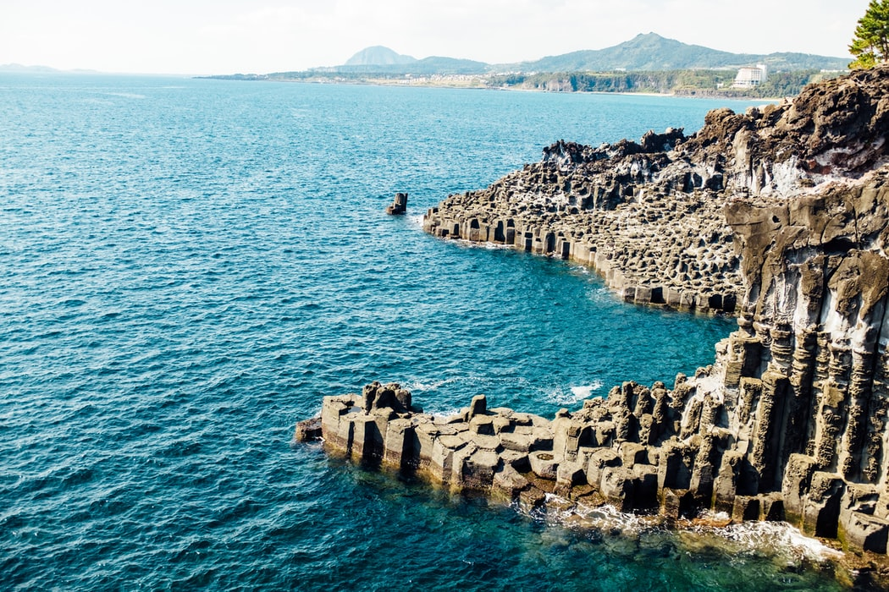

ကိုရီးယား Drama တွေ Kpop တွေ ခေတ်စားလာတာနဲ့အမျှ လူတွေရဲ့ စိတ်ကူး အထူးသဖြင့် မိန်းကလေးတွေရဲ့ အိမ်မက်တွေထဲမှာ Korea သွားလည်ချင်တယ်ဆိုတဲ့ အတွေးတွေ နေရာယူလာပါတယ် ဂျယ်ဂျူးကျွန်းဟာ မျှတသောရာသီဥတုနဲ့ ရင်သပ်ရူမောဖွယ်ရာ ရူခင်းများ လွမ်းမောဖွယ်နေရာလေးများ ၊ ရုပ်ရှင်ရိုက်ကွင်းနေရာများ လှပခမ်းနားသော ကျောက်ဆောင်များကြောင့် ခရီးသွားများ၊ ဟန်နီးမွန်းစုံတွဲများ၊ လူငယ်တို့ရဲ့အားလပ်ရက် picnic များအတွက် အထူးပင်ကျော်ကြားလှပါတယ်
ခရီးသွားတွေ အရမ်းများတဲ့အတွက် ဟိုတယ်တွေလဲတော်တော် ပေါပါတယ် Jeju မြို့ထဲရှိ ဟိုတယ်တွေမှာ နေလို့ရသလို ဈေးသက်သာတဲ့ Minbak လို့ခေါ်တဲ့ ရိုးရာအိမ် guest house လေးတွေမှာလဲ ဘော်ဘော်တွေစုငှားနေပြီး ချက်ပြုတ်စားသောက်လို့လဲရသေးတယ်
ကိုယ်နေမယ့် ဟိုတယ်ကနေ ကားတွေအလွယ်တကူ ဌားစီးပြီး လျောက်သွားနိုင်သလို ကိုယ်ကိုတိုင် မောင်းတတ်ရင်လဲ ကားပဲဌားပီး ကိုယ့်ဟာကိုယ် ဆီထည့်ပီးလဲမောင်းနိုင်ပါတယ် အဲ့လိုဌားရင် ဈေးလဲသိပ်မကြီးသလို လွတ်လွတ်လပ်လပ်လဲရှိပါတယ် ဘော်ဒါတွေအများကြီးနဲ့ဆိုရင်တော့ ပျော်လို့ကိုဆုံးမှာမဟုတ်တော့ဘူး
အများကြီးရှိပါတယ် ကိုယ်နေရင်နေသလောက်ကို လျှောက်သွားလို့မကုန်နိုင်ပါဘူး Princess Hour ဇာတ်ကားရိုက်တဲ့ Teddy Bear လေးတွေရဲ့ ချစ်စရာကောင်းတဲ့ပြတိုက်၊ ချန်ဂင် ဇာတ်ကားထဲက ကိုရီးယားရိုးရာရွာလေး၊ Secret Garden ကားထဲက ရူခင်းနေရာလေးတွေ၊ လီဗျောင်ဟွန်းနဲ့အွန်စောတို့ရဲ့ All in ကားထဲက Church၊ နောက်ပီး Seongson Sunrise Peak လို့ခေါ်တဲ့ လွန်ခဲ့တဲ့နှစ်ပေါင်းများစွာက မီးတောင်ပေါက်ကွဲပြီးဖြစ်ပေါ်လာတဲ့ တောင်ထွဋ်ပေါ်ကို အရမ်းလှတဲ့ရူခင်းတွေ ကြည့်ပြီးတက်နိုင်သလို အောက်ဖက်မှ ပင်လယ်ကြီးဆီကိုလဲ Romatic ဆန်တဲ့ လှေကားလေးတွေနဲ့ ဆင်းသွားနိုင်ပါသေးတယ် နောက်တခုကတော့ ချော်ရေတွေ ပင်လယ်ကမ်းထဲ စီးဆင်းရာမှ အေးခဲသွားပြီး ချောက်ကမ်းပါးသဖွယ်ဖြစ်နေတဲ့ Jusangjeolli Ciff ကိုလဲသွားပီး ပင်လယ်ကို ငေးလို့ရသေးတယ် အသက် ၁၈ နှစ်အထက်သာသွားနိုင်တဲ့ Love Land ကလဲ ရင်ခုန်စိတ်လူပ်ရှားစရာပါပဲ နွေရာသီမှာ သွားမယ်ဆိုရင်တော့ ရေကစားနိုင်တဲ့ Beach တွေလဲ အများကြီးပါပဲ ရေတံခွန်ကြီးတွေနဲ့လဲ ဓါတ်ပုံရိုက်နိုင်ပါသေးတယ်
Jeju ရဲ့ အဓိကအစားအစာတွေကတော့ ပင်လယ်စာတွေပါပဲ ပုဇွန် ၊ ဂုံးနဲ့ အခြားပင်လယ်စာတွေပါတဲ့ Seafood Hot Pot ( Haemul-Ttukbaegi )/ ၀က်သားပြုတ်ရေထဲ ပင်လယ်ရေညှိ ထည့်ပြုတ်ထားတဲ့စွပ်ပြုတ် Momguk ၊ နောက်ထပ် နာမည်ကြီးတာကတော့ ၀က်မည်းအသားဖြစ်ပြီး တခြား၀က်သားတွေထက် အရသာရှိလှပါတယ် နောက်ပီး နာမည်ကြီးတဲ့ ကိုရီးယား အကင်တွေ ၊ ကြက်ကြော်တွေ ၊ လျှာပူလျှာပူ ၊ စတဲ့ ဆိုလ်းမြို့မှာရတဲ့ အစားအစာတွေလဲ အများကြီးရှိပါတယ် သောက်စရာကတော့ မက်ကောလီလို့ခေါ်တဲ့ ဆန်အရက်တမျိုးကို တခြားကိုရီးယားရဲ့ တခြားပြည်နယ်တွေနဲ့ မတူတဲ့ အရသာတမျိုးနဲ့ မြည်းစမ်းနိုင်မှာဖြစ်ပါတယ် နောက်ထပ် နာမည်ကြီးပြီး မစားမဖြစ်ကတော့ Jeju ရဲ့ ထွက်ကုန်ဖြစ်တဲ့ Hallabong လို့ခေါ်တဲ့ လိမ္မော်သီးပါပဲ သူရဲ့အရွယ်အစားကြီးမားမူနဲ့ ချိုမြိန်မူကြောင့်လဲ အရမ်းနာမည်ကြီးပါတယ် မစားမဖြစ်တဲ့ နောက်ထပ်တစ်ခုကတော့ J ပုံစံ လုပ်ထားတဲ့ ရေခဲမုန့်ပါပဲ
နာမည်ကျော်လှတဲ့ ကိုရီးယားအလှကုန်ပေါင်းများစွာကို ဈေးပေါပေါနဲ့ ၀ယ်ယူနိုင်မှာဖြစ်သလို တခြားကိုရီးယားအ၀တ်အထည် ၊ ဖိနပ်၊ လျှပ်စစ်ပစ္စ္စည်း ၊ ကမ္ဘာကျာ် Brand စတာတွေ ၀ယ်ယူနိုင်တဲ့ shopping center တွေများစွာရှိသလို Stationary ၊ သော့ချိတ် ၊ ပန်ချီကား စတဲ့ အိမ်အပြန်လက်ဆောင်၀ယ်လို့ရတဲ့ Art Street လိုနေရာလေးတွေလဲ ရှိပါသေးတယ် ဈေးအရမ်းသက်သာတဲ့ မိမိလိုချင်တဲ့ ပစ္စ္စည်းကို ချက်ချင်းငွေရှင်းပြီး လေဆိပ်ရောက်မှသာ ထုတ်ယူနိုင်တဲ့ ကိုရီးယားရဲ့နာမည်ကျော် Duty Free Shop ကြီးတွေလဲ အများကြီးမို့ ပိုက်ဆံသာ များများထည့်လာရုံပါပဲ
ကျွန်းမြို့လေးပဲဆိုပြီး ညဘက်သွားစရာမရှိဘူးလို့ မထင်လိုက်ပါနဲ့ များလွန်းလို့ လက်မလည်အောင် ဖြစ်နေပါလိမ့်မယ် ဆိုလ်းမြို့မှာနာမည်ကြီးတဲ့ မြောင်ဒုံ shopping street လို Baozen shopping street ကလဲ ညဘက်တွေလမ်းလျှောက် ဈေး၀ယ်ပြီး Bar တွေ Restaurant တွေ Night Club တွေအများကြီးမို့ မပြန်ချင်အောင်ပါပဲ နောက်တစ်နေရာကတော့ City Hall နေရာဖြစ်ပြီး ကိုရီးယားတွေအသွားများတဲ့အတွက် ရိုးရားဆိုင်တွေများပါတယ် ကိုရီးယားစတိုင် Bar ၊ Karaoke ၊ Pub တွေအများကြီးနဲ့မို့ သူတို့ရဲ့နေထိုင်မူ ၊ ကိုရီးယား ဇာတ်ကားတွေထဲက သူတို့အလုပ်ပြီးတဲ့နောက် အချိန်ဖြုန်းတဲ့ပုံစံ စတာတွေကို မြင်တွေ့ရမှာဖြစ်လို့ သွားသင့်တဲ့ နေရာလေးပါပဲ ၊ နောက်တနေရာကတော့ ဆိုဂျူးလေးသောက် ၊ ပင်လယ်အစားအစာလေးတွေစားပြီး ၊ ပင်လယ်ရူခင်းလေးတွေကြည့် ၊ ဒါမှမဟုတ် ချစ်စရာကောင်းတဲ့ ကိုရီးယားစုံတွဲလေးတွေကို ငေးမောနိုင်မယ့် Top-dong seaside နေရာလေးပဲဖြစ်ပါတယ် နောက်ဆုံးတစ်ခုကတော့ ဆိုလ်းမြို့မှာတောင်မရနိုင်တဲ့ Casino ပါပဲ Jeju မှာ Casino ဆော့ကစားလို့ရတဲ့ 5 star hotel တွေအများကြီးပါပဲ အဲ့ဒီ Hotel တွေမှာ မတည်းလဲ သွားဆော့လို့ရပါတယ် ကိုယ့်တည်းတဲ့ ဟိုတယ်က Reception ကို Casino ဆော့ချင်တယ်လို့ ပြောလိုက်ရင်ပဲ သူတို့က ဖုန်းဆက်ပေးပြီး ကားနဲ့ပါ လာကြိုပေးပါလိမ့်မယ်
တောင်နဲ့ပင်လယ် ၊ ကျောက်ဆောင်နဲ့ရေလိူင်း၊ ချောက်ကမ်းပါးတွေ ၊ ရေတံခွန်တွေ ၊ ပင်လယ်ရွာလေးတွေ ၊ မဆုံးနိုင်တဲ့ ရူမျော်ခင်းတွေ ၊ ချစ်သူတို့ရဲ့ Romatic နေရာလေးတွေ ၊ ကြင်စဦးတို့ရဲ့ ပျားရည်စမ်းနေတဲ့အပြုံးလေးတွေ ၊ ကိုယ်ညတိုင်းကြည့်နေတဲ့ ကိုရီးယားကားတွေထဲက ချစ်ဖို့ကောင်းတဲ့ ကောင်လေး ကောင်မလေးတွေ ၊ မြည်းစမ်းကြည့်စရာ အစားအစာ အစုံအလင်တွေ ၊ စိတ်ကူးယဉ်ထားခဲ့ဖူးတဲ့ ရုပ်ရှင်ရိုက်ကွင်းနေရာတွေနဲ့ သင့်ကိုစောင့်ကြိုနေမယ့် ဗီဇာမလိုပဲသွားလို့ရတဲ့ ချစ်စရာကောင်းတဲ့ Jeju Island လေးပါပဲ
Source From I Love Travelling
Wonder Tour is committed to bringing our readers the best in value and quality travel arrangements. We are passionate about travel and sharing the world's wonders with you.
Copyright @ Footsteps Travel
Made by Group-2/Symphony-6/Lei Lei Win Thant
 Previous
Previous